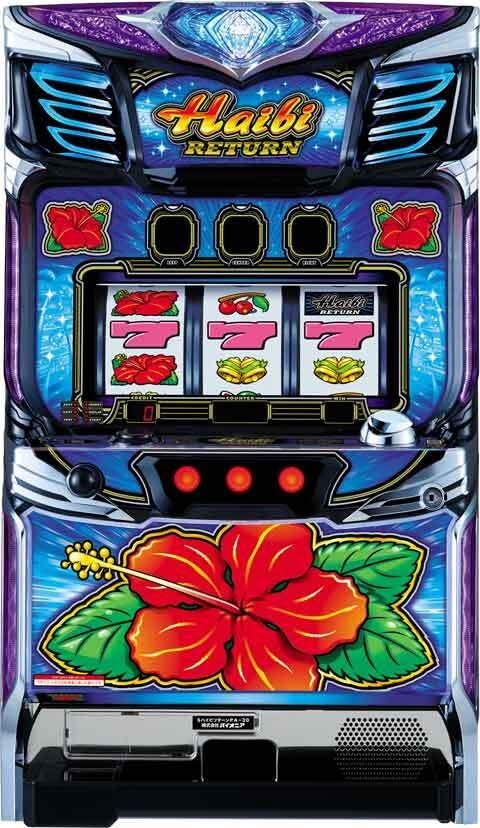
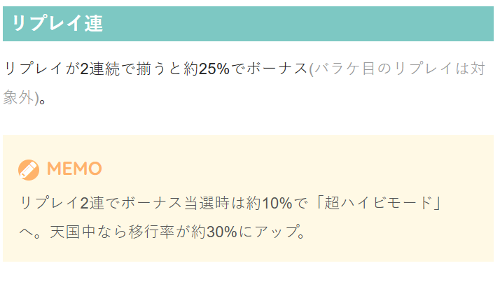
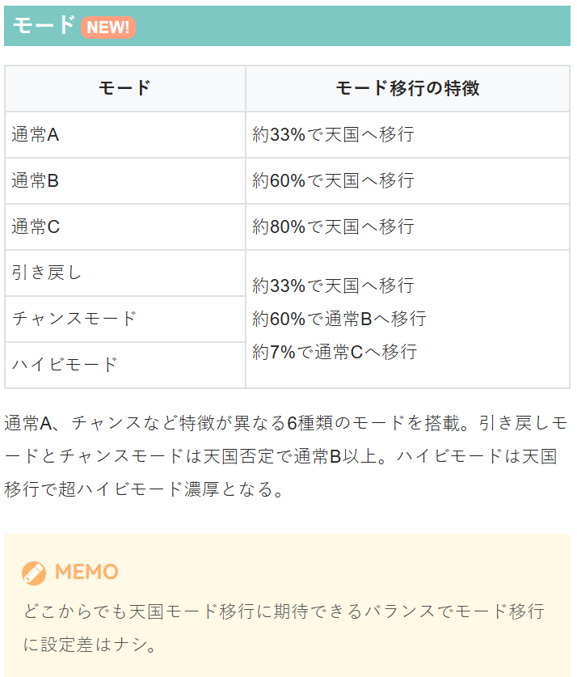
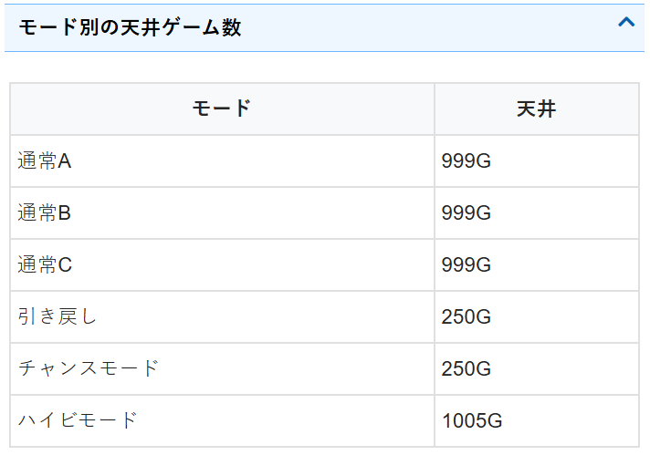

ハイビリターン‐30

【天井情報】 通常時を999G消化でボーナスに当選。 ハイビモード滞在時はのみ最大1005Gで当選となり、天国に移行(約1/3)すれば「超ハイビモード」へ。ただしペナルティで1000Gを超えた場合を除く。 朝イチリセット時はチャンスモード移行に期待。 【リセット判別】 不明 【有利区間について】 不明
狙い目
【リセット狙い】
不明
【ゲーム数天井狙い】
0スルー 620Gから
1スルー以上 420Gから 0スルー時に100G前後までに当選していた場合は0Gから？？
2スルー以上 0Gから天国まで？？
※引き戻しやチャンスモード当選後はB以上に移行するため、0スルー時に早い初当たりの場合は高モードが期待出来る？
【ゾーン狙い】
不明
【有利区間関連狙い】
不明
やめ時
ボーナス後32G消化してやめ
その他



参考元
ツラヌキメソッド（無料期待値表）
かめとうさぎのパチスロブログ
基本情報
- メーカー: パイオニア
- 機械割: 98.1% 〜 108.0%
- 導入開始日: 2025年07月07日（月）
- ゲーム性概要: ●ハイビスカスが光ればボーナス濃厚の沖スロ仕様 ●ボーナスの純増は約9枚/Gなのでスピード感は抜群！ ●通常時は6種類のモードを搭載 ●ボーナス中はBIGの1G連を抽選 ●天国モードや超ハイビモード移行で32G以内のボーナス濃厚 ●超ハイビモードは平均ボーナス回数約13回！ ●ボーナス後の32G目は小役入賞でボーナス濃厚


打ち方
打ち方・小役
打ち方（小役狙い）
「最初に狙う絵柄」 左リールにBARを狙う。スイカ停止時は中リールをフリー打ちし、右リールにスイカを狙おう。その他の停止形はフリー打ちでOKだ。

「スイカ停止時」 中リールはフリー打ち。右リールにハイビスカスを目安にスイカを狙おう。

「小役の停止形」

変則押しはNG
通常時は順押しでの消化を推奨。ハサミ打ちもNGなので注意しておこう。

解析情報通常時
小役関連
［設定差なし］小役確率
| 役 | 確率 |
|---|---|
| 通常時・リプレイ揃い | 約1/50 |
| 通常時・ベルリプレイ | 約1/55 |
| ボーナス中・リプレイ | 約1/7.3 |
| チェリー | 約1/52 |
| スイカ | 約1/128 |
共通ベル（左1stの15枚ベル）確率に設定差が存在する。通常時のバラケ目リプレイを除く小役が揃う確率は約1/15。
内部状態関連
内部状態概要
【ボーナス当選率に影響】 チェリー・スイカ成立時に内部状態の昇格を抽選。通常＜高確A＜高確B＜高確Cの4段階で、上位の状態ほどレア役成立時のボーナス当選期待度がアップ。高確中は全役で転落が抽選される。 高確状態はボーナス中も有効なので、高確中のボーナス当選時は1G連当選にも期待できる。
内部状態昇格率
| 役 | 昇格率 |
|---|---|
| チェリーorスイカ | 約33% |
内部状態の昇格は基本的に1段階ずつだが、まれに高確A→高確Cなど、複数段階昇格することもある。
高確の平均滞在ゲーム数
| 高確 | ゲーム数 |
|---|---|
| 高確A | 約31G |
| 高確B | 約39G |
| 高確C | 約87G |
転落契機はチェリー・スイカ以外のハズレを含む全役。
モード
通常モード概要
【モード解説】 通常時のモードは6種類で、滞在モードに応じてボーナス当選時の天国移行率が変化。天国へ移行するまで下位のモードへ転落することはなく、通常Aでも約33%で天国へ移行する。 ハイビモードから天国へ移行した場合は超ハイビモード濃厚だ。
モードごとの天井ゲーム数
| モード | 天井 |
|---|---|
| 通常A | 約999G |
| 通常B | 約999G |
| 通常C | 約999G |
| 引き戻し | 約250G |
| チャンス | 約250G |
| ハイビ | 約1005G |
| 天国 | 32G |
| 超ハイビ | 32G |
引き戻しモードは天国から転落時のみ、チャンスモードは設定変更時のみ移行する可能性あり。 引き戻し・チャンス・ハイビの3モード滞在中に天国非移行時は約60%で通常B、約7%で通常Cへ移行する（通常Aへの転落はない）。
各モードの特徴
| モード | 特徴 |
|---|---|
| 通常A | 約33%で天国へ |
| 通常B | 約60%で天国へ |
| 通常C | 約80%で天国へ |
| 引き戻し | 天国終了時にのみ移行、 約33%で天国へ |
| チャンス | 設定変更時のみ移行、 約33%で天国へ |
| ハイビ | 約33%で天国へ、天国移行時は超ハイビ濃厚 |
| 天国 | 32G以内にボーナス当選、ボーナス確率約1/14、 ループ性あり |
| 超ハイビ | 32G以内にボーナス当選、ボーナス確率約1/8、 天国よりもループ率が高く、BIG比率も高い |
［リプレイ2連以外でのボーナス当選時］モード移行率
| 移行先 | 通常A滞在時 | 通常B滞在時 | 通常C滞在時 |
|---|---|---|---|
| 通常A | 調査中 | ー | ー |
| 通常B | 調査中 | 調査中 | ー |
| 通常C | 調査中 | 調査中 | 調査中 |
| 天国 | 約33% | 約60% | 約80% |
| 超ハイビ | 調査中 | 調査中 | 調査中 |
| 移行先 | 引き戻し滞在時 | チャンス滞在時 | ハイビ滞在時 |
| 通常A | ー | ー | ー |
| 通常B | 約60% | 約60% | 約60% |
| 通常C | 約7% | 約7% | 約7% |
| 天国 | 約33% | 約33% | ー |
| 超ハイビ | ー | ー | 約33% |
基本的には滞在モードを参照してボーナス当選時にモード移行を抽選。リプレイ2連を契機にボーナスに当選した場合、超ハイビへの移行が抽選される。
［リプレイ2連でのボーナス当選時］超ハイビモード移行率
| 状態 | 移行率 |
|---|---|
| 天国以外 | 約10% |
| 天国 | 約30% |
リプレイ2連確率は約1/2500。2連時の約25%でボーナスに当選する。
［ボーナス後32G目の小役揃い契機］天国移行率
| 役 | 移行率 |
|---|---|
| ベル・リプレイ揃い | 約50% |
| レア役 | 100% |
ボーナス後32G目の小役揃い契機でボーナスに当選した場合、ベル・リプレイ揃いは約50%、レア役の場合は必ず天国へ移行する。
ボーナス抽選
［チェリーorスイカ］ボーナス当選率
| 内部状態 | 当選率 |
|---|---|
| 通常 | 約0.4％ |
| 高確A | 約0.8％ |
| 高確B | 約25％ |
| 高確C | 約60％ |
チェリーとスイカのボーナス当選率は共通。
［リプレイ2連］ボーナス当選率
| リプレイ回数 | 当選率 |
|---|---|
| 2連 | 約25％ |
| 3連以上 | 約25％ |
リプレイ揃いが2連続すると約25%でボーナスに当選。3連、4連と続いた場合でも当選率は変わらず約25%で抽選される。 ボーナス中もリプレイ揃い2連でBIGの1G連抽選がおこなわれるが、リプレイ揃い確率が上がっているため当選率は約25%ではない。
［ボーナス後32G目］ボーナス当選率
| 役 | 当選率 |
|---|---|
| ベル・リプレイ揃い | 100%（約50%で天国移行） |
| レア役 | 100%（天国濃厚） |
ボーナス後32G目はいずれかの小役が揃えばボーナス濃厚（小役揃い確率約1/15）。ベルやリプレイ揃いなら約50%で、レア役なら必ず天国へ移行する。
解析情報ボーナス時
ボーナス
ボーナス概要
ボーナスはBIGとREGの2種類で、いずれも擬似遊技なので揃えるのに目押しの必要はナシ。消化中はレア役やリプレイ2連でBIGの1G連が抽選される。

ボーナス性能
| 項目 | BIG | REG |
|---|---|---|
| 獲得枚数 | 約300枚 | 約100枚 |
| 1Gあたりの純増 | 約9枚 | |
| 消化中の抽選 | リプレイの連続やレア役でBIG1G連を抽選 |
「BIGの絵柄」 ピンク7揃いがデフォルトで、ハイビスカス揃いはBIGの1G連濃厚。BAR揃いなら超ハイビモードが濃厚となる。

「BIGの1G連抽選」 レバーON時に予告音＋リール上部のセグ周りのランプが光るとレア役成立を示唆（赤はチェリー、緑はスイカ示唆）。停止音変化が第3停止まで継続すると1G連濃厚だ。リプレイ時も停止音変化が発生する。 実戦上は複数ストックを獲得することもできたので、ヒキ次第では天国以上へ移行しなくてもまとまった出玉を獲得できる。

演出情報
通常時
ベル・リプレイ成立時のフェザーランプとトップランプ 白フラッシュによる示唆
| 回数 | 示唆 |
|---|---|
| 1回 | 高確A以上示唆 |
| 3回 | 高確B以上示唆 |
［フェザーランプ＆トップランプフラッシュ］ ベル・リプレイ成立時にフェザーランプとトップランプが白くフラッシュすれば高確滞在を示唆。パッパッパッと3回フラッシュするパターンなら高確B以上示唆となる。

次回天国示唆演出
| No. | 演出 |
|---|---|
| ① | ハイビスカスプレミアム点滅 （超ハイビ示唆パターン除く） |
| ② | リールスタート音が無音 |
| ③ | SPテンパイ音 |
| ④ | ハイビレトロサウンド（ボーナス中） |
| ⑤ | チュラサン場所サウンド（ボーナス中） |
次回超ハイビ示唆演出
| No. | 演出 |
|---|---|
| ① | ハイビスカス片側だけ高速点滅 |
| ② | 隠しハイビスカス点滅 |
| ③ | プレミアム点滅＋SPテンパイ音 |
| ④ | SPテンパイ音からのREG |
| ⑤ | ハイビレトロメドレーサウンド（ボーナス中） |
| ⑥ | BAR揃いBIG |
［プレミアム点滅］ 通常点滅以外のパターンが発生すれば天国モード以上の期待大！


［隠しハイビスカス点滅］ ボーナス告知時、ボーナス開始時、ボーナス中、ボーナス終了時など、さまざまなタイミングで隠しハイビスカスが点滅する可能性あり！